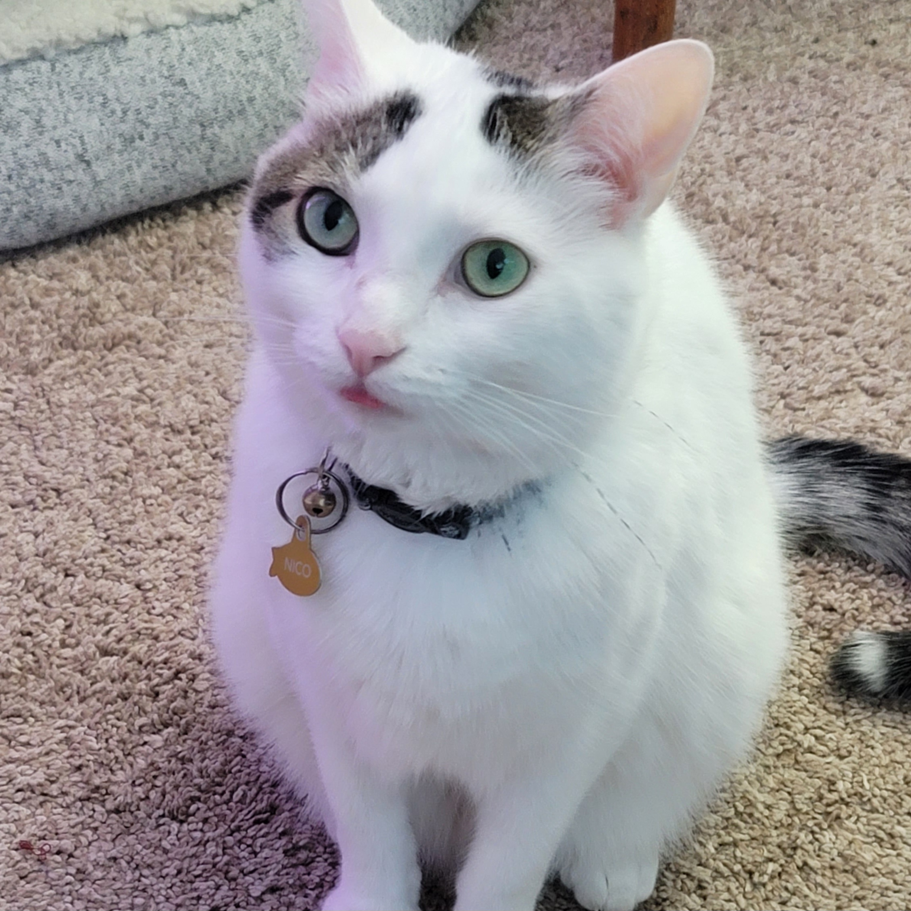

Nico
About Nico
Nico is a little sassy and picky. He's very particular about who is petting him and how. One second he is enjoyin the pets and the next he is annoying. He is still rather sweet though, especially once he finally gets comfortable with you!
I am one of the few lucky people Nico seemed to like the first time he met them!